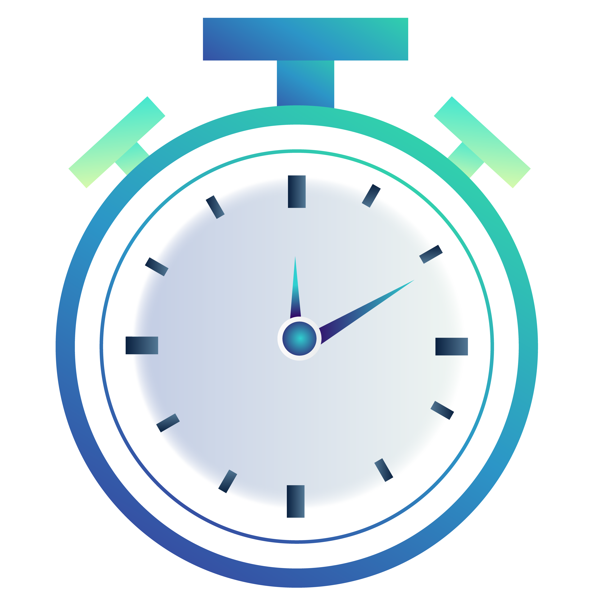

Calculator

The Calculator software is a simple and efficient tool for basic arithmetic operations. It features an easy-to-use interface and supports addition, subtraction, multiplication, and division. The software also includes a clear button for easy corrections. Ideal for everyday use...
Learn MoreFortune Cookies

Fortune cookies are small, crisp cookies served after a meal in Chinese restaurants. They contain a small piece of paper with a fortune or message inside. The origin of fortune cookies is still debated, but they are believed to have been created in the US in the early 20th century
Learn MoreStop-Watch
A stopwatch is your time-keeping superhero! Whether you're timing a race, cooking a gourmet meal, or conducting a science experiment, this handy tool is your trusty sidekick for measuring time with precision. Try it and do not forget to turn it off
Learn MoreRock - Scissors - Paper

Rock-Paper-Scissors against a computer opponent is a game where one player chooses rock, paper, or scissors and the computer randomly chooses one of the three options. The winner is determined by the classic rules: rock beats scissors, scissors beat paper, and paper beats rock.
Learn MoreTips Calculator

Say goodbye to the guesswork and hello to easy tipping with our tip calculator! Simply enter the bill amount, choose a desired tip percentage, and voila! Our calculator does the rest. No more math mistakes, no more confusion, just a quick and accurate calculation for the perfect tip every time.
Learn MoreGuess the color

Guess the Color is a fun and simple game that tests your ability to quickly recognize and recall colors. The game presents you with a color word, and you have to guess the color that corresponds to that word as quickly as possible. And voila try and play
Learn More